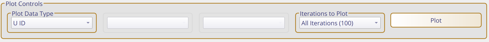

MAPIT Introduction#
Fuel fabrication overview#
The purpose of this tutorial is to introduce you to the example dataset found in the MAPIT tools repository. This dataset was based on a fuel fabrication facility described by IAEA-STR150. There are some unique features of MAPIT that are only present when using the included datasets and might not be available when analyzing an external dataset.
Some features of the fuel fabrication facility is noted below:
300 MT UO\(_2\)
3.0% weight percent \(^{235}\)U
Final products are LWR fuel assemblies
Feed material:
Low enriched UF\(_6\)
Uranyl nitrate
UO\(_2\) powder
Material from facility scrap recovery
Walkthrough#
This tutorial describes basic functions of MAPIT and how to get started using the sample dataset that has been included.
Getting started#
Downloading the exemplar dataset#
The exemplar dataset for MAPIT is no longer included in the main repository and must be downloaded from the MAPIT tools repository.
Loading the exemplar dataset#
The pre-generated dataset described in the introduction can be imported into MAPIT by specifying the path to the data folder. This usually occurs when launching MAPIT for the first time, but it can also be accessed by selecting File > Load Exemplar Data > Select directory. The path selected here should be the path to the data folder downloaded from the MAPIT tools repository. For example, your path might be /path/to/folder/data.
Note
Selecting the data path only needs to be performed once and is stored in MAPIT internally. If you move your data directory, you can always redefine the path to the data folder by again going to File > Load Exemplar Data > Select directory.
If a valid path to data is selected, then several of the options in the data selection area will populate. Currently, the MAPIT-tools repo includes data from a generic fuel fabrication facility with notional scenarios for nominal behavior, an abrupt material loss, and a protracted material loss. Your MAPIT window should look similar to the image below.

Statistical test configuration#
The boxes with gold borders are the next steps in the MAPIT workflow. The currently available statistical tests are denoted by check boxes, go ahead and select all of them.
The suggest parameters for the statistics parameters are as follows:
MBP(Material Balance Period, units of hours) : 416Try different
MBPlengths to see how performance statistics changeIterations(Number of statistical realizations to run): 50Increasing the number of
Iterationscan reduce the simulation uncertainty in the probability of detection
Analysis Element/Index: UThe exemplar dataset only includes uranium, so multiple options are not available
Temporal Offset: Empty
After setting the required statistics inputs the final step before starting the calculation is setting the errors. As no measurements are perfect it is impossible to know the true value of some quantity of interest (in this case Uranium) at a particular location. Use Select Errors to open an interactive dialog to set measurement errors. These can be set individually or as a group. Press Done when finished.
Tip
One purpose of MAPIT is to understand how these errors impact common safeguards statistical tests, so feel free to choose any value. The IAEA ITV (International Target Values) provides a good reference for expected performance for different types of measurement systems.
Tip
Entering a customized error table can be tedious. The included example scenario has 31 different measurement locations! MAPIT allows for loading (Load Error Config) that reads a .csv table of errors so that manual specification is not required every time MAPIT is run. Similarly, you can use (Save Error Config) to save a specified error configuration to disk. The directory containing this configuration file can be found using the platformdirs package as follows:
from platformdirs import user_config_dir
print(user_config_dir("MAPIT",None))
Analysis#
Once the statistical tests and errors have been configured press Run to start the calculation. MAPIT is a lightweight tool that should run fairly quickly for a small number of iterations (~100), but varies based on hardware configuration. Progress can be monitored through the dialog and progress bar at the bottom of the tool (see below).
{kind=link}
Tip
Large-scale jobs can be processed in parallel using StatsProcessor from the API.
Plotting#
The first step in many analytical workflows is to plot data to gain an intuition for what is happening. MAPIT has multiple plot options (shown below) that dynamically change based on the option selected. Try plotting different quantities of interest (also make sure to note how these change with the selected errors).
{kind=link}
The various options are as follows. Note that some options may not be available depending on what quantity is being plotted.
Plot Data Type
Varies depending on selected statistical tests
Always includes the “ground truth data” and “observed data”
Ground truth is the data before errors are applied by MAPIT
Observed data is the ground truth after errors have been applied
Requested statistical tests will also be available here
Plot Data Location
Only relevant for “ground truth data” and “observed data”
Location doesn’t apply to the statistical tests at the moment as MAPIT only supports analysis of one material balance area at a time
Lists locations based data used
Included dataset has locations baked in
Attempts to use user provided locations if data was imported
Plot Data Nuclide
Only relevant for “ground truth data” and “observed data”
Used to plot specific nuclide at a location of interest within the material balance
Iterations to Plot
Not relevant for “ground truth data”
Used to control how many iterations are plotted
Thresholds#
Statistical tests used in safeguards usually require adjustment of at least one tunable parameter. For example, Page’s trend test actually has two (h and k) of which one is made available to users (h).
Important
Page’s trend test currently uses k=0 which is the ideal statistic for a one unit shift in SITMUF
The statistical threshold area of MAPIT (shown below) allows users to input a value and see how many times that threshold has been crossed. The threshold calculation is generic and can be applied to any of the plot quantities.

Note
The quantity reported by MAPIT % Above Threshold reflects all of the runs, even if not plotted. For example, if 1000 iterations were requested, then the max quantity of iterations allowed to be plotted at once is 100. However, the threshold will check all 1000 runs and report the quantity that exceeds the threshold.
Note
The threshold tool reports if a particular iteration of a quantity of interest has past the threshold at any time in the dataset. There may be some desire to check a threshold for a limited window of time, however this capability is not yet implemented. In the meantime, please preprocess your data if desired to circumvent this limitation. For example, if you want to know yearly performance, but your dataset is two years long, split the dataset in half before importing into MAPIT.
Error contributions#
Understanding the contribution of various facility measurements to the material balance uncertainty is often important. Identifying large sources of error can help prioritize areas for improvement. MAPIT facilitates this analysis by providing tabular data describing the error contribution of various components. This can be accessed through by selecting Tabular Data View > Error Contribution. This view is only available if SEID/SEMUF has been selected.
Data Export#
While MAPIT has a wide range of capabilities it may be desirable to save data for secondary analysis or use with a report. MAPIT supports saving of figures generated in the plot area in addition to the raw data itself.
Figure#
Figures can be saved by using the save icon at the bottom of the plot (see below) which directly interacts with the Matplotlib backend. Plots can be further customized by using the options on the navigation bar.

Data#
The data can be exported by selecting the File menu option in the MAPIT main area and selecting Save Data. An option will be presented to save the underlying data used for the safeguards statistical tests (i.e. “observed data”). The default behavior is to save data in .csv format with a shape of [time x iterations]. For example, for a case where 100 iterations were requested and the time was 5000, then the .csv would be of shape (5000,100).
Caution
Do not expect reliable performance of this capability when using irregularly sampled data. Although MAPIT can handle this type of data, validation efforts are ongoing and have not yet been completed.
Tip
The default output directory can be found by using the platformdirs package as follows:
from platformdirs import user_data_dir
print(user_data_dir("MAPIT",None))